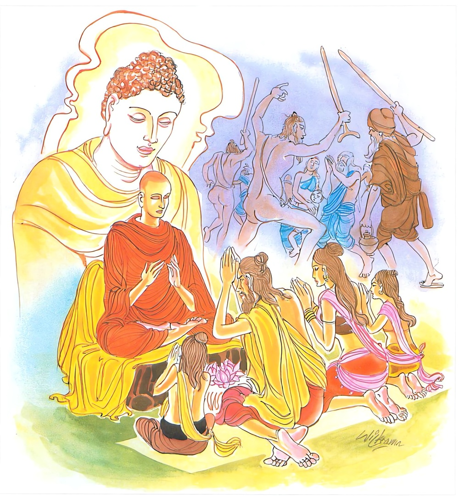

10-9 සන්තති මහ ඇමැත්තාගේ කථා පුවත.
මෙම කතාව සද්ධර්ම සාගරයෙන් ද කියවන්න.
අලඞ්කතො චෙ’පි සමං චරෙය්ය
සන්තො දන්තො නියතො බ්රහ්මචාරී
සබ්බෙසු භූතෙසු නිධාය දණ්ඩං
සො බ්රාහ්මණො සො සමණො ස භික්ඛු.
වස්ත්රාභරණයෙන් සැරැසුණු පුද්ගල ද ඉදින් (කායවිෂමතාදියෙන් තොර වැ) කායසමාධි සංයමයෙහි යෙදී පවතී ද, (රාගාදී කෙලෙසුන් සංහුන් බැවින්) ශාන්ත ද, ඉන්ද්රිය දමනයෙන් දැමුනේ වී ද, (චතුර්විධ මාර්ග නියමයෙන්) නියම කරණ ලද සත්තක්ඛත්තුපරමතා ආදි බව් ඇත්තේ වේ ද, ශාසනබ්රහ්මචර්ය්ය මාර්ගබ්රහ්මචර්ය්ය ඇත්තේ වේ ද, සියලු සතුන් කෙරෙහි (කායදණ්ඩාදි) දණ්ඩ බහා තබා දුරු කොට වෙසේ ද, මෙ බඳු ගුණයුක්ත වූ ඒ රහත් තෙම (බාහිත පාප ඇති බැවින්) බ්රාහ්මණ නමුදු වේ. (සංසිඳුණු පව් ඇති හෙයින්) සමණ නමුදු වේ. (බුන් කෙලෙස් ඇති බැවින්) භික්ෂු නමුදු වේ.

“අලඞ්කතො වෙපි” යන මෙම ධර්ම දේශනය ශාස්තෲන් වහන්සේ සැවත් නුවර ජේතවනාරාමයේ වැඩ සිටියදී සන්තති මහා ඇමතියන් ඇරබ දේශනා කළහ.
මේ සන්තති මහ ඇමතිවරයා එක් අවස්ථාවක පසේනදී රජුගේ ප්රත්යන්තයේ ඇතිවූ කුපිතවීමක් සන්සිඳවා පැමිණියේය. මේ නිසා රජු සතුටුවුයේ දින හතක් රාජ්ය දී ගායනයට හා නැටීමට දක්ෂ එක් ස්ත්රියක් ද දුන්නේය. ඔහු දින හතක් සුරාදාමයෙන් මත්ව හත්වැනි දිනයේ සියලු අලංකාරයෙන් සැරසුනේ ඇතෙකු පිටනැග නාන තොටට යන්නේ පිඬු පිණිස පිවිසෙන බුදුරජාණන් වහන්සේ දොරටුව අසල සිටිනු දැක ඇතුපිට සිටියදීම හිස සලා ගෞරව දක්වා ගියේය.
බුදුරජාණන් වහන්සේ සිනා පහළ කොට, සිටියදී ආනන්ද හිමියෝ ස්වාමීනි කුමක් නිසා සිනා පහළ කළේ දැයි විමසූහ. එයට හේතු පැහැදිලි කරන බුදුහු ආනන්ද සන්තති මහ ඇමති අද සියළු ආබරණවලින් සැරසී මා වෙත පැමිණ සිව්පද ගාථාවක් අවසන රහත් වී තල් ගස් හතක් පමණ අහසට නැගී සිට පිරිනිවන් පාන්නේ යයි සිනා පහළ කළ බව පැවසුහ. මහජනයා බුදුන් හා ආනන්ද තෙරුන් අතර පැවති කථාව අසා - මිථ්යාදෘෂ්ටික අය සිතූහ. බලන්න භවත් ගෞතමයන්ගේ ක්රියාව කටට ආවක්ම කිසයි. අදම ඔහු බොරුවෙන් ගරහමුයි පැවසුහ. සම්යක්දෘෂ්ටික අය මෙසේ සිතූහ. අහෝ බුදුන්ගේ මහානුභාවනාව අද බුද්ධලීලාව ද සන්තති මහ ඇමතිගේ ලීලාව දක්නට ලබමුයි සිතූහ. සන්නති මහ ඇමති ද නානතොට දී දිවා කාලයේ ජල ක්රීඩාවේ යෙදී උයනට ගොස් අවන්හල භූමියේ වාඩිවිය. ඒ ස්ත්රිය ද රඟ මඩලට බැස නැටුම් වැයුම් ගැයුම් දක්වන්නට පටන් ගත්තීය. ඇගේ ශරීර ලීලාව දැක්වීම සඳහා දින හතක් අල්ප ආහාර ගැනීම නිසා එදවස නැටුම් ගැයුම් වැයුම් දක්වන්නේ කුස තුළ පැසෙන වායුව නැගී හදය මාංසය ඇඹරී ගියහ. ඇය එකෙනෙහි කට ද දෑස් ද විවර වී (මුඛය හා ඇස්) විවර වීම මිය ගියාය.
සන්තති මහ ඇමති ඇය ගැන සොයා බලන්නැයි කී විට ස්වාමීනි ඇය මිය ගියා යයි පැවසූ විට බලවත් ශෝකයෙන් මඩනා ලදුයේ එකෙනෙහිම දින හතක් බොන ලද රා රත්වූ කබලක ජලබිදු මෙන් සිඳී ගියේය. හේ මගේ ශෝකය නිවාලන්නට බුදුන් හැර කිසිවෙකුටත් නොහැකියයි බලකායද පිරිවරා ගෙන හැන්දෑවේ බුදුන් වෙත ගොස් වැඳ මෙසේ පැවසුවේය. ස්වාමීනි මෙතරම් දරුණු ශෝකයක් ඇතිවුණි. එය නිවීමට ඔබ වහන්සේට හැකිවන්නේ යයි සිතා ආවෙමි. මට පිළිසරණවනු මැනවැයි පැවසීය. අනතුරුව බුදුරජාණන් වහන්සේ ශෝකය නිවා දැමීම දක්ෂයා වෙතම ආවේ යයි පවසා මෙම කාන්තාව මේ ආකාරයෙන්ම මීට පෙර ආත්මවලදී ද මියගිය විට ඔබ විසින් හෙළු කඳුළු සිව්මහා සයුරු ජලයට වඩා වැඩි යයි පවසා මේ ගාථාව දේශනා කළහ.
යමෙක් පෙර වියැලේද පසුව එය දුකකැයි කියති මධ්යම අවස්ථාවේදී එය නොගනීද එනිසාම උපශාන්තව හැසිරෙන්නේය.
ගාථාව අවසානයේ සන්තති මහාමාත්යයා රහත්බවට පත්ව තමන්ගේ ආයුසංස්ඛාරය බලන්නේ එය නොපවත්නා බව දැන බුදුන්ට මෙසේ පැවසීය. ස්වාමීනි මට පිරිනිවන් පෑමට අනුදැන වදාරන්න. බුදුරජාණන් වහන්සේ ඔහු විසින් කරන ලද කර්මය දන්නේ මුසාවෙන් ගැරහූ නිග්රහ කිරීම පිණිස පැමිණි එක්රැස්වූ මිථ්යාදෘෂ්ටිකයන්ට අවකාශයක් නොදීමටත්, බලන්නට රැස්වූ සම්යක්දෘෂ්ටිකයෝ මේ ඇමති විසින් කළ කර්මය අසා පින් කිරීමේ ආදරය කැමැත්ත දියුණු කරතියි සලකා එසේ නම් ඔබ විසින් කළ කර්මය මට පවසන්නැයි කියමින් බිම සිට නොකියා තල් ගස් හතක් උසට අහසට නැගී කියන්නැයි පැවසුහ. හේ ස්වාමීනි යහපතැයි බුදුන් වැඳ එක් තල් ගසක් පමණට නැගී බැස නැවත බුදුන් වැඳ උඩට නැගෙන්නේ පිළිවෙලින් තල් ගස් හතක් උසට නැගී අහසේ පලක් බැඳ වාඩිවී ස්වාමීනි මගේ පෙර කර්මය අසන්නැයි පැවසීය.
මෙයින් අනු එක් කල්පයකට පෙර විපස්සී බුද්ධ කාලයේ දී මම බන්ධුමතී නුවර එක් කුලයක ඉපිද මෙසේ සිතුවෙමි. අන් අය සිඳීම හෝ පෙළීම නොකර ක්රියාවක් ඇත්දැයි සිතමින් ධර්මය කියාදීම දැක එතැන් පටන් ධර්ම ඝෝෂා පවත්වමින් මහජනයා සතුටු කොට පින් කරමි. බුද්ධාදී රත්නත්රය සමාන වෙනත් රත්නයක් නැතැයි රත්නත්රයට සත්කාර කරමු. යනුවෙන් ඝෝෂා කරමින් හැසිරුනෙමි. ඒ මගේ හඬ අසා බුදුරජාණන් වහන්සේගේ පියාණෝ “බන්ධුමතී මහරජ” මා කැඳවා දරුවා කුමක් කරමින් හැසිරෙන්නේදැයි විමසා දේවියනි! තෙරුවන්හි ගුණය ප්රකාශ කරමින් මහජනයා පිංකම්හි සමාදන් කරවමින් යොදවමින් හැසිරෙමියි කී කල කොහිසිට හැසිරෙන්නේදැයි විමසා පයින් ගමන් කරමින් යයි කීවිට දරුව ඔබට මෙසේ ගමන් කිරීම සුදුසු නොවේ යයි පවසා මේ මල්දම ගෙන පැළඳ අසුපිට නැගී හැසිරෙන්නැයි කියා මට මුතුදමක් සමාන මල්දමක් දී අශ්වයෙක් ද දුන්නේය. ඉක්බිති මා රජතුමා දුන් යානයෙන් එලෙසම ඝෝෂා කොට හැසිරෙන්නේ නැවත ද රජතුමා කථාකොට දරුව කුමක් කරමින් හැසිරෙන්නේදැයි විමසා පෙරසේම කරන බව පැවසු විට දරුව ඔබට රථයද සුදුසු නොවේයයි පවසා මහත් වස්තුවද, සියළු අභරණින් සැරසූ එක් ඇතෙක් ද දුන්නේය. ඒ මම සියළු අභරණින් සැරසූ ඇතුපිට වාඩි වී අවුරුදු අසූදහසක් ධර්මය හඬනගා කීමි ඒ මගේ සිරුරෙන් එපමණ කලක් සඳුන් සුවඳ පැතිරුනි. මුවින් උපුල් සුවඳ හමයි. මේ මවිසින් කරන ලද කර්මයයි මෙලෙස ඔහු විසින් පෙර භවයේදී කරන ලද කර්මය කියා අහසේ සිටියදීම තේජෝධාතුවට සමවැදී පිරිනිවන් පෑහ. සිරුරින් ගිනි ජාලා පැනනැගී මස් ලේ දැමීය. දෑසමන් මල් සේ ශාරීරික ධාතු ඉතිරි විය. බුදුහු සුදු වස්ත්රයක් දිගහැරීයහ. ශාරීරික ධාතු ඒ සුදුවතට වැටුණි. එම ධාතු පාත්රයේ තබාගෙන සතරමඟ වීථිවල ස්තූප කළහ. මහජනයා වන්දනාමාන කොට පින් රැස් කළහ. මේ පිළිබඳ කථාවක් ධම්සභා මණ්ඩපයේ දී ඇති කළහ. සන්තති මහ ඇමති බුදුන්ගෙන් බණ අසා අවසානයේ රහත් බවට පත්ව අලංකාර වස්ත්රයෙන්ම සැරසී සිට අහසේදීම පිරිනිවන් පෑවේය. කිම ඔහු ශ්රමණයෙක් කීමට වටී ද නැතහොත් බ්රාහ්මණයෙක් කීමට වටීද? යනුවෙනි බුදුරජාණන් වහන්සේ එහි පැමිණ මා ඒමට පළමු කිනම් කථාවකින් යුතුව සිටියේ දැයි විමසා
මෙවැනි කථාවකින් යුක්තව උනුම්හයි කී කල්හී මහණෙනි ! මගේ පුත්රයන් ශ්රමණයන් වීමට වටනේ යයි කියා ධර්මය දෙසීම සඳහා මේ ගාථාව වදාළහ.
නොයෙක් අගනා සළු පිලින් හා රන් රිදීයෙන් බැබළුණත්
සාන්තව සිට රකින ඇත්තා බුදු සසුන් බඹසර උසස්
සියළු දඬු හා අවිමුගුරු හැර විතැන් වේවිද යුද්දයෙන්
ඔහුම මහණෙකි. ඔහුම බමුණෙකි. ඔහුම තවුසෙකි යයි කියත්
එහි අලඞ්කතො - අගනා වස්ත්රවලින් මනාව සැරසීමයි. එහි අර්ථය වස්ත්රාදියෙන් සැරසීමයි. සමංචරෙය - රාගාදී ව්යුපසමනයයි. සන්තො - සන්සුන් බවයි. කෙලෙස් තුනී කිරීමට තැත් කිරීමයි. දන්තො - දැමුණු බවයි. හික්ම වූ ඉඳුරන් ඇති බවයි. නියතො - සෝවාන් ආදී සතරමග නියමයෙන් නියම වු ඉපදීමයි. බ්රහ්මචාරී - ශ්රේෂ්ඨ චර්යාවයි. සබ්බෙසු භූතෙසු - සියළු දඬුවම් සත්ත්වයින්ට හිංසා පීඩා කිරීම වැළැක්වීමයි. බ්රාහ්මණො මෙවැනි වු සියලු පාපයන්ගෙන් වෙන්වූ තැනැත්තායි. සමණො - සියළු පව් සන්සිද වූ පුද්ගලයායි. භික්ඛු - සියළු කෙලෙස් ප්රහාණය කළ තැනැත්තායි. යනුවෙන් කියන ලදී. දේශනාවසානයේ දී බොහෝ දෙනා සෝවාන් ආදී ඵලයන්ට පැමිණුනාහු වෙති.